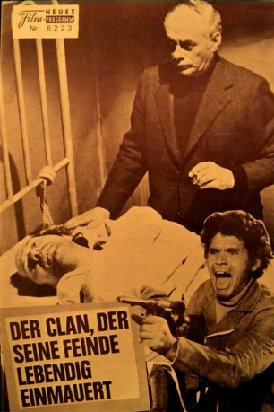
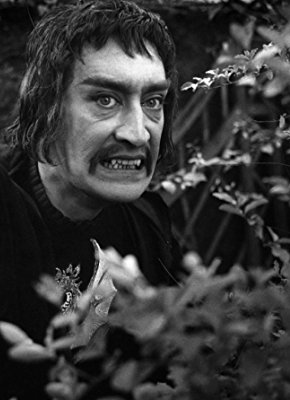
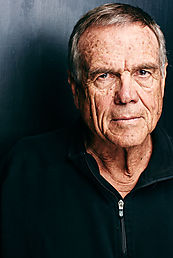

#11031 Das Geständnis eines Polizeikommissars vor dem Staatsanwalt der Republik
Alternativ: Confessions of a Police Captain (Englischer Titel) - Der Clan, der seine Feinde lebendig einmauert
 
 IMDB-Wertung: 7.2 / 10
IMDB-Wertung: 7.2 / 10  Metascore: 0
Metascore: 0 
Der Clan, der seine Feinde lebendig einmauert ist ein 1971 veröffentlichter italienischer Polit-Thriller von Damiano Damiani mit Franco Nero in der Hauptrolle. Alternativtitel ist die wörtliche Übersetzung des Originals, Das Geständnis eines Polizeikommissars vor dem Staatsanwalt der Republik.
Jahr: 1971
Dauer: 105 Minuten
FSK: 16
Land: Italien Studio: Koch MediaTonspuren:
Untertitel: Deutsch,
Auflösung: 720p (1280x544) Größe: 3338 MB
Genre: Drama, Krimi
Regisseur: Damiano Damiani
Drehbuch: Damiano Damiani, Fulvio Gicca Palli, Damiano Damiani, Salvatore Laurani
Soundtrack: Riz Ortolani
Darsteller:
 Franco Nero als Deputy D.A. Traini
Franco Nero als Deputy D.A. Traini Martin Balsam als Commissario Giacomo Bonavia
Martin Balsam als Commissario Giacomo Bonavia- Marilù Tolo als Serena Li Puma
- Claudio Gora als District Attorney Malta
- Giancarlo Prete als Giampaolo Rizzo
-  Arturo Dominici als Lawyer Canistraro
- Michele Gammino als Gammino
- Adolfo Lastretti als Michele Li Puma
 Nello Pazzafini als Prisoner
Nello Pazzafini als Prisoner Michael Forest als Dubrosio (uncredited)
Michael Forest als Dubrosio (uncredited)-  Charles Howerton als Gammino (uncredited)
- Mickey Knox als Soothsayer (uncredited)
 Frank Latimore als Traini (uncredited)
Frank Latimore als Traini (uncredited) Ted Rusoff als Zito (uncredited)
Ted Rusoff als Zito (uncredited)- Luciano Catenacci als Ferdinando Lomunno
- Calisto Calisti als A mafioso, e.g. involved in wall in
- Wanda Vismara als Traini's maid
- Adele Modica als Lina Paladino - lover of Bonavia
- Dante Cleri als Usher
- Roy Bosier als Giuseppe Lasciatelli
- Giancarlo Badessi als On. Grisì
- Filippo De Gara als Nicotra - the Mayor
- Giuseppe Alotta als Prisoner
- Paolo Cavallina als Himself
- Gianni Palladino als
- Gualtiero Rispoli als
- Sergio Serafini als Prison guard
- Pina Lo Prato als
- Ugo Savona als
- Luigi Ursi als
- Rosario Rosone als
- Bruno Boschetti als Policeman
- Vincenzo Norvese als
- Franco Tranchina als
- Giancarlo Palermo als
- Ettore Arena als Asylum Patient (uncredited)
- Cicely Browne als Receptionist (uncredited)
- Sisto Brunetti als Jailed (uncredited)
- Lewis E. Ciannelli als Mechanic (uncredited)
- Sonia De Dominicis als Serena (uncredited)
- Larry Dolgin als Rizzo (uncredited)
- Veriano Ginesi als Prisoner (uncredited)
- Anthony La Penna als Commissioner / Senator (uncredited)
- Gene Luotto als Doctor / Guard (uncredited)
- Edward Mannix als Capo / Narrator (uncredited)
- Robert Sommer als Capo (uncredited)
- Robert Spafford als Malta (uncredited)
- Susan Spafford als Governess (uncredited)
- Frank von Kuegelgen als Cop (uncredited)
Datei: X:\1971\Geständnis eines Polizeikommissars vor dem Staatsanwalt der Republik, Das (1971, FSK16, 1280x544).mkv seit 22.04.2019
Festplatte: HD 1971-1979
 Es gibt insgesamt 28 Filme in der Gruppe '1971'
Es gibt insgesamt 28 Filme in der Gruppe '1971'